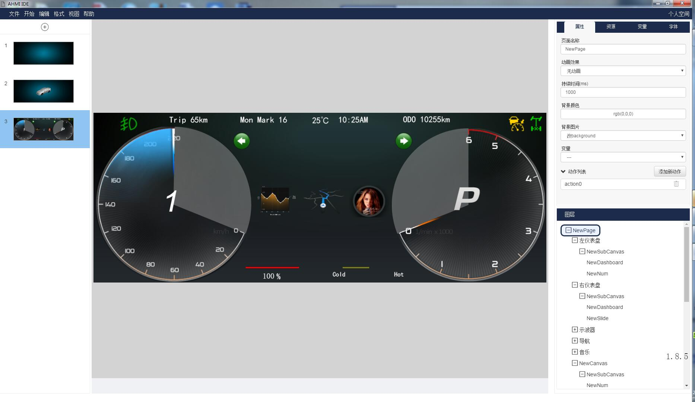
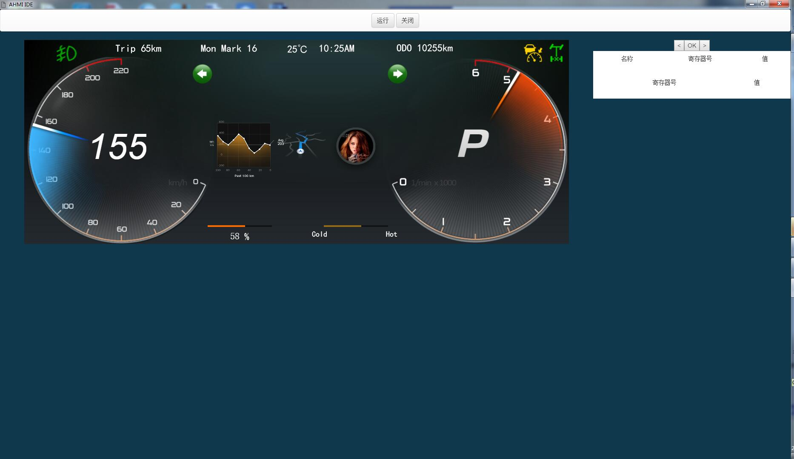

可视化制作交互界面
通过添加控件、配置属性，完成人机交互界面的静态布局。接着添加事件逻辑，就完成了动态的、具有逻辑交互的人机界面。

实时模拟仿真
通制作好的人机交互界面可以实时模拟在硬件平台的运行效果，所见即所得。
“如同制作PPT一般设计和实现人机交互界面，您仅仅需要准备好素材，而无需学习编码。”
通过添加控件、配置属性，完成人机交互界面的静态布局。接着添加事件逻辑，就完成了动态的、具有逻辑交互的人机界面。
通制作好的人机交互界面可以实时模拟在硬件平台的运行效果，所见即所得。